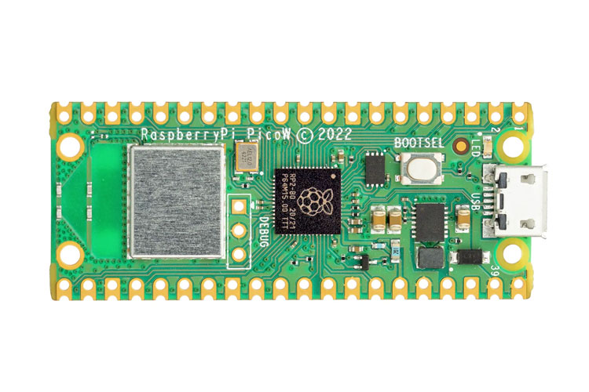

Raspberry Pi Pico W
Raspberry Pi’s $6 microcontroller board: a dual-core Cortex-M0+ RP2040 with Infineon Wi-Fi, castellated edges for soldering, and the friendliest firmware workflow in the industry — hold a button, plug in USB, drag a file.

FCC ID
FCC ID: 2ABCB-PICOW (Grantee: 2ABCB = Raspberry Pi). Covers the Pico W wireless variant.
What the FCC filing revealed
The FCC filing for this device includes the documents manufacturers are required to submit: external photos, internal photos, test setup photos, RF test reports, and the user manual. These are public record at fccid.io.
What you can typically find:
- Internal photos — board layout, chip placement, shielding, antenna design
- Block diagrams — sometimes included, showing the RF chain architecture
- Test reports — conducted and radiated emissions data, which can reveal operating frequencies and power levels
- Label placement — where the FCC ID lives on the device
What the FCC filing does not include: schematics (usually withheld under confidentiality requests), firmware, bill of materials, or debug interface documentation.
What we reveal
The FCC tells you what a device emits. We tell you what’s inside and how it works.
- Chip-level identification — every major IC named, with datasheet links where public documentation exists
- Board mapping — what connects to what, which test pads matter, where the debug interfaces hide
- What the manufacturer won’t tell you — undocumented features, hidden radios, silent telemetry, repair blockers
Key Chips
- Raspberry Pi RP2040 — dual ARM Cortex-M0+ at 133 MHz, 264 KB SRAM, 2 MB external QSPI flash — Raspberry Pi’s first in-house silicon.
- Infineon CYW43439 — 2.4 GHz Wi-Fi 4 + Bluetooth 5.2 combo, connected over SPI.
Teardown Notes
- There is barely anything to tear down — and that’s the point. The Pico W is a single small PCB with castellated edges, a micro-USB port, the RP2040, the wireless chip under a shield can, and 2 MB of flash.
- The debug interface is fully documented: three pins on the board edge carry SWD (serial wire debug) for the RP2040, and Raspberry Pi publishes the Picoprobe firmware that turns a second $4 Pico into a debug probe.
- This is the reference example of how open hardware documentation should work: full datasheet, hardware design files, and open-source SDK with no NDA.
Simple Entry Points
BOOTSEL: firmware in ten seconds
You need: A micro-USB cable. That’s it.
- Hold the BOOTSEL button, plug the Pico W into your computer, release the button. It appears as a USB mass-storage drive.
- Drag a .uf2 firmware file onto the drive. The board reboots running your code.
- For debugging, flash Picoprobe onto a second Pico and connect its GP2/GP3 to the target’s SWD pins — a complete debug probe for $4.
$ ls /media/$USER/
RPI-RP2
$ cp firmware.uf2 /media/$USER/RPI-RP2/
$ # board reboots and runs firmware.uf2The Pico W is also the cheapest practical debug probe in existence: one Pico programs and debugs another.
The Full Record
Everything in this timeline is documented — a court outcome, a regulator’s action, a published security analysis, or Raspberry Pi’s own statements — and each entry links its source. Where a popular claim about the Pico W is not proven, it is labeled Unverified at the end, with the evidence on both sides.
No recalls, lawsuits, or regulator actions against the Pico W appear in the public record as of November 2026. What is documented is quieter: the silicon errata Raspberry Pi publishes in its own datasheet, and — for the Pico line’s successor chip — a public hacking challenge Raspberry Pi ran on purpose. Both are recorded below, because the full record includes the boring parts.
| Year | What happened | Source |
|---|---|---|
| 2021 | RP2040-E11: the ADC is less accurate than designed. Raspberry Pi’s own datasheet errata record that the RP2040’s analogue-to-digital converter (ADC — the part that turns voltages into numbers) has differential non-linearity (DNL) error peaks at four values — 512, 1,536, 2,560, and 3,584 — caused by an error in the scaling of its internal capacitors. Measured effective resolution (ENOB) is 8.7 bits, not the 9 bits simulated. The erratum affects every RP2040 revision, has no workaround, and is marked “Not fixed.” | RP2040 datasheet, Appendix B: Errata RP2040-E11 (PDF) |
| 2021 | RP2040-E9: the boot ROM cannot boot straight into cache-as-SRAM. The datasheet’s bootrom erratum records that a RAM-only UF2 program cannot boot directly into the XIP cache used as extra SRAM: the watchdog reboot that enters it re-enables the cache and causes an immediate bus fault. The documented workaround is code in main SRAM that re-disables caching first. Affects RP2040 B0, B1, and B2; resolution is documentation, not new silicon. | RP2040 datasheet, Appendix B: Errata RP2040-E9 (PDF) |
| 2024 | RP2350-E9: the successor chip’s pins can latch (Pico 2, not Pico W). The RP2350 in the Pico 2 — the Pico W’s successor line, not this board — shipped with erratum E9: a GPIO input can latch at about 2.15V instead of falling back to 0V, an effect first tied to the internal pull-down resistors and later confirmed to occur even without them. Raspberry Pi blamed third-party IP in the chip and documented workarounds, including external pull-down resistors of 8.2kΩ or less. It is recorded here because Pico W buyers are routinely offered the Pico 2 W as the upgrade. | Hackster — RP2350 erratum E9 |
| 2024–2025 | Raspberry Pi paid hackers to break its next chip — and they did. At DEF CON 32 (August 2024) Raspberry Pi launched the RP2350 Hacking Challenge: retrieve a 128-bit secret from one-time-programmable memory protected by secure boot, win $10,000. Nobody claimed it in a month, so the prize doubled to $20,000. In January 2025 Raspberry Pi confirmed four winning attacks (plus a fifth independent one) — most by voltage glitching — and published the results itself, saying hiding vulnerabilities would be “grossly irresponsible.” The RP2040 in the Pico W has no secure boot to break; this is the record of how its successor’s security was tested in public. | Hackster — RP2350 challenge winners |
Did you know
- RP2040 is a formula, not a model number. Raspberry Pi’s own datasheet decodes it digit by digit: 2 processor cores, 0 for the Cortex-M0+ core type, 4 for the RAM size (floor(log2(256kB / 16kB))), and 0 because the chip carries no non-volatile storage of its own. Source: RP2040 datasheet, §1.1 (PDF).
- The chip at the heart of the Pico W holds no program at all. That final 0 is literal: the RP2040 has zero on-chip flash. The Pico W’s 2 MB of program storage is a separate external QSPI flash chip on the board, which the RP2040 executes from through its cache. Source: Raspberry Pi Magazine — behind the name 2040.
- Its “12-bit” ADC honestly measures about 8.7 bits. The datasheet publishes the measurement against its own part: DNL error peaks at four codes cut the effective number of bits from a simulated 9 to a measured 8.7 (erratum RP2040-E11, in The Full Record above). Few vendors print that in the datasheet; Raspberry Pi does. Source: RP2040 datasheet, §4.9 and Appendix B (PDF).
- The E9 pin-latching bug has since been fixed in silicon. Raspberry Pi’s RP2350 A4 stepping fixes erratum E9 and the glitching attacks found by its own hacking challenge, and adds 5V tolerance on all GPIO pins while powered — though the company cautioned it may be a while before A4 chips appear on Pico 2 boards. Source: Hackster — RP2350 A4 stepping.
Further Reading
- Raspberry Pi microcontroller documentation — official docs
- RP2040 datasheet — Raspberry Pi
“UNIX was not designed to stop its users from doing stupid things, as that would also stop them from doing clever things.”
— Doug Gwyn